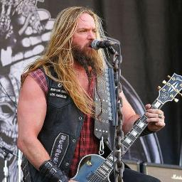
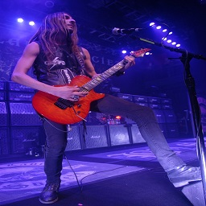
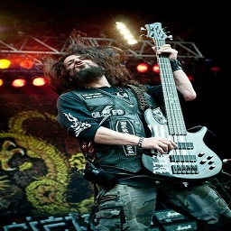
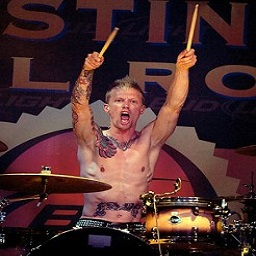

Breve historia sobre a formação da banda:
Criada em 1999, uma década depois de Zakk se projetar ao lado do Príncipe das Trevas, a banda se colocou entre as principais da geração no heavy metal mundial e ele como um dos grandes heróis da guitarra na atualidade.
Atuais membros da banda e sua função:
- Zakk Wylde - Vocalista/Guitarrista

Zakk Wylde é um músico e ator americano, célebre por ter sido guitarrista da banda do Ozzy Osbourne,
ícone do heavy metal que o ajudou a se projetar como um dos mais famosos músicos do gênero na atualidade.
- Dario Lorina - Guitarrista Base

Em 2014 o Black Label Society grava mais um álbum de estúdio, intitulado Catacombs of the Black Vatican,
e apresenta sua nova formação com Dario Lorina (ex Lizzy Borden) na guitarra.
- John DeServio - Baixista

Em 2005, depois de assinarem com a Artemis Records, Mafia foi lançado. Em outubro, Lomenzo deixou
a banda e foi substituído pelo baixista original da banda, John DeServio.
- Jeff Fabb - Baterista

Baterista americano, já tocou para Tripface, InThis Moment, The Dirty Apostles, James Durbin,
Black Label Society, Filter.